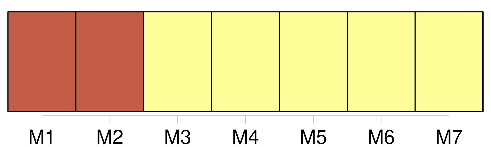

Longueur nb maillons : 7 mentions |
 |
En effet, les années précédentes, chaque agent percevait en moyenne 75 à 80 % de la totalité de [sa prime] En 2002, chacun a perçu un acompte royal de 30 % de [sa prime de service] pour son petit Noël. [3 phrases] Quel meilleur système que de pomper dans [la prime de service] et sur le dos du personnel pour récupérer des sous quelque part... [1 phrases] La CFDT poursuit : « Il faut savoir que [la prime de service] est un salaire différé qui représente 7, 50 % des salaires. Cette somme devrait être mise de côté chaque mois ( par 1 / 12e ) et cumulée pour arriver à 12 / 12e en fin d'année, c'est cela [la prime de service du personnel]
Fin novembre 2002, c'est donc 11 / 12e de [la prime de service] qui devait être à la disposition du personnel, soit environ 90 %. [6 phrases] Ni les représentants du personnel, ni le comité technique d'établissement ( CTE ) n'ont été consultés, alors que les modalités de versement de [la prime de service] avaient été déterminés il y a quelques années au comité technique d'établissement en concertation avec les anciens directeurs du centre hospitalier de Bar-le-Duc. |
|
Il est possible de télécharger la ressource sur la page Ortolang |
Si vous avez des questions ou vous voyez des erreurs, merci d'envoyer un mail à silvia.federzoni89@gmail.com |